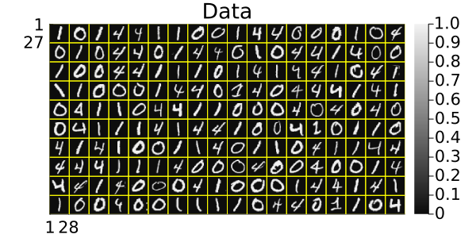
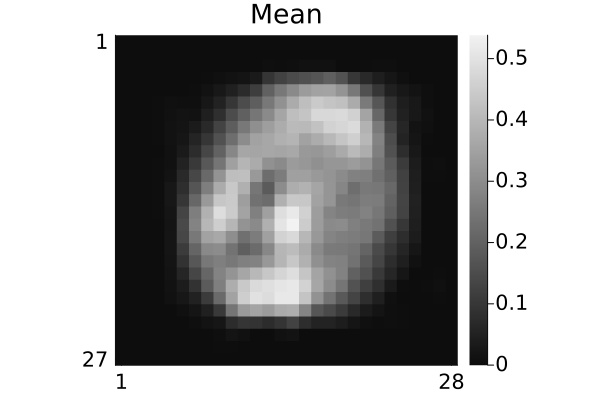
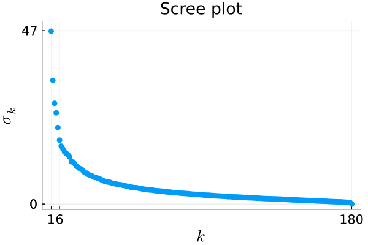
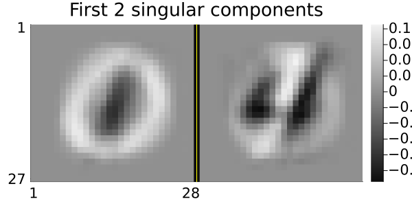
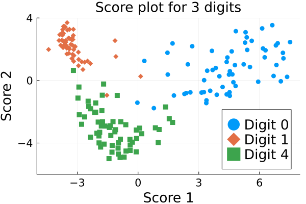

PCA
Principal component analysis (PCA) illustration
This example illustrates PCA of hand-written digit data.
This page comes from a single Julia file: pca.jl.
You can access the source code for such Julia documentation using the 'Edit on GitHub' link in the top right. You can view the corresponding notebook in nbviewer here: pca.ipynb, or open it in binder here: pca.ipynb.
Setup
Add the Julia packages used in this demo. Change false to true in the following code block if you are using any of the following packages for the first time.
if false
import Pkg
Pkg.add([
"InteractiveUtils"
"LaTeXStrings"
"LinearAlgebra"
"MIRTjim"
"MLDatasets"
"Plots"
"Random"
"StatsBase"
])
endTell Julia to use the following packages. Run Pkg.add() in the preceding code block first, if needed.
using InteractiveUtils: versioninfo
using LaTeXStrings # nice plot labels
using LinearAlgebra: svd
using MIRTjim: jim, prompt
using MLDatasets: MNIST
using Plots: default, gui, plot, savefig, scatter, scatter!
using Plots.PlotMeasures: px
using Random: seed!, randperm
using StatsBase: mean
default(); default(markersize=5, markerstrokecolor=:auto, label="",
tickfontsize=14, labelfontsize=18, legendfontsize=18, titlefontsize=18)The following line is helpful when running this file as a script; this way it will prompt user to hit a key after each figure is displayed.
isinteractive() ? jim(:prompt, true) : prompt(:draw);Load data
Read the MNIST data for some handwritten digits. This code will automatically download the data from web if needed and put it in a folder like: ~/.julia/datadeps/MNIST/.
if !@isdefined(data)
digitn = (0, 1, 4) # which digits to use
isinteractive() || (ENV["DATADEPS_ALWAYS_ACCEPT"] = true) # avoid prompt
dataset = MNIST(Float32, :train)
nrep = 60 # how many of each digit
# function to extract the 1st `nrep` examples of digit n:
data = n -> dataset.features[:,:,findall(==(n), dataset.targets)[1:nrep]]
data = cat(dims=4, data.(digitn)...)
labels = vcat([fill(d, nrep) for d in digitn]...) # to check later
nx, ny, nrep, ndigit = size(data)
data = data[:,2:ny,:,:] # make images non-square to force debug
ny = size(data,2)
data = reshape(data, nx, ny, :)
seed!(0)
tmp = randperm(nrep * ndigit)
data = data[:,:,tmp]
labels = labels[tmp]
size(data) # (nx, ny, nrep*ndigit)
end(28, 27, 180)Look at "unlabeled" image data prior to unsupervised dimensionality reduction
pd = jim(data, "Data"; size=(600,300), cticks=0:1,
# xticks = false, yticks = false, tickfontsize=12, right_margin=-5px, # book
)
# savefig(pd, "pca-data.pdf")
Compute sample average of data
μ = mean(data, dims=3)
pm = jim(μ, "Mean")
# savefig(pm, "pca-mean.pdf")
Scree plot
Show singular values.
data2 = reshape(data .- μ, :, nrep*ndigit) # (nx*ny, nrep*ndigit)
f = svd(data2)
ps = scatter(f.S; title="Scree plot", widen=true,
xaxis = (L"k", (1,ndigit*nrep), [1, 6, ndigit*nrep]),
yaxis = (L"σ_k", (0,48), [0, 0, 47]),
)
# savefig(ps, "pca-scree.pdf")
prompt()Principal components
The first 6 or so singular values are notably larger than the rest, but for simplicity of visualization here we just use the first two components.
K = 2
Q = f.U[:,1:K]
pq = jim(reshape(Q, nx,ny,:), "First $K singular components"; size=(600,300))
# savefig(pq, "pca-q.pdf")
Now use the learned subspace basis Q to perform dimensionality reduction. The resulting coefficients are called "factors" in factor analysis and "scores" in PCA.
z = Q' * data2 # (K, nrep*ndigit)2×180 Matrix{Float32}:
-3.68769 6.25571 -3.73453 -1.93295 … -3.69552 6.81066 0.995399
3.45898 1.48057 2.90521 -3.54616 2.52211 2.24464 -3.96443PCA scores
The three digits are remarkably well separated even in just two dimensions.
pz = plot(title = "Score plot for $ndigit digits",
xaxis=("Score 1", (-5,8), -3:3:6),
yaxis=("Score 2", (-6,4), -4:4:4),
)
markers = (:circle, :diamond, :square)
for (i,d) in enumerate(digitn)
scatter!(z[1,labels .== d], z[2,labels .== d], label="Digit $d", marker=markers[i])
end
pz
# savefig(pz, "pca-score.pdf")
prompt()Reproducibility
This page was generated with the following version of Julia:
using InteractiveUtils: versioninfo
io = IOBuffer(); versioninfo(io); split(String(take!(io)), '\n')12-element Vector{SubString{String}}:
"Julia Version 1.10.1"
"Commit 7790d6f0641 (2024-02-13 20:41 UTC)"
"Build Info:"
" Official https://julialang.org/ release"
"Platform Info:"
" OS: Linux (x86_64-linux-gnu)"
" CPU: 4 × AMD EPYC 7763 64-Core Processor"
" WORD_SIZE: 64"
" LIBM: libopenlibm"
" LLVM: libLLVM-15.0.7 (ORCJIT, znver3)"
"Threads: 1 default, 0 interactive, 1 GC (on 4 virtual cores)"
""And with the following package versions
import Pkg; Pkg.status()Status `~/work/book-la-demo/book-la-demo/docs/Project.toml`
[6e4b80f9] BenchmarkTools v1.5.0
[aaaa29a8] Clustering v0.15.7
[35d6a980] ColorSchemes v3.24.0
[3da002f7] ColorTypes v0.11.4
⌅ [c3611d14] ColorVectorSpace v0.9.10
[717857b8] DSP v0.7.9
[72c85766] Demos v0.1.0 `~/work/book-la-demo/book-la-demo`
[e30172f5] Documenter v1.2.1
[4f61f5a4] FFTViews v0.3.2
[7a1cc6ca] FFTW v1.8.0
[587475ba] Flux v0.14.12
⌅ [a09fc81d] ImageCore v0.9.4
[71a99df6] ImagePhantoms v0.7.2
[b964fa9f] LaTeXStrings v1.3.1
[7031d0ef] LazyGrids v0.5.0
[599c1a8e] LinearMapsAA v0.11.0
[98b081ad] Literate v2.16.1
[7035ae7a] MIRT v0.17.0
[170b2178] MIRTjim v0.23.0
[eb30cadb] MLDatasets v0.7.14
[efe261a4] NFFT v0.13.3
[6ef6ca0d] NMF v1.0.2
[15e1cf62] NPZ v0.4.3
[0b1bfda6] OneHotArrays v0.2.5
[429524aa] Optim v1.9.2
[91a5bcdd] Plots v1.40.1
[f27b6e38] Polynomials v4.0.6
[2913bbd2] StatsBase v0.34.2
[d6d074c3] VideoIO v1.0.9
[b77e0a4c] InteractiveUtils
[37e2e46d] LinearAlgebra
[44cfe95a] Pkg v1.10.0
[9a3f8284] Random
Info Packages marked with ⌅ have new versions available but compatibility constraints restrict them from upgrading. To see why use `status --outdated`This page was generated using Literate.jl.